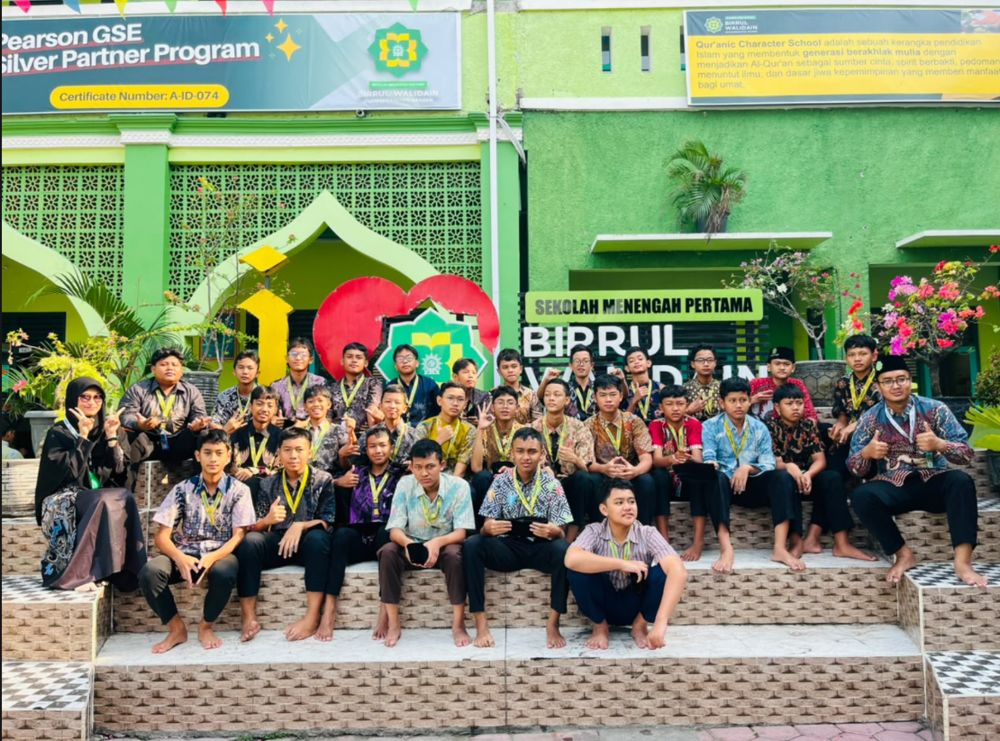

SMP Birrul Walidain Muhammadiyah Sragen
8E
Kebersamaan, semangat belajar, dan kekompakan yang tumbuh setiap hari di lingkungan sekolah. Inilah wajah kelas 8E, generasi yang siap berprestasi dengan akhlak mulia.

Kelas 8E bersama
Kelas 8E adalah kumpulan siswa yang aktif, kompak, dan penuh semangat. Di bawah naungan nilai Islami dan kemuhammadiyahan, kami belajar menjadi pribadi yang cerdas, mandiri, dan berakhlak baik.
- Belajar bersama
- Acara kelas
- Olahraga
- Kegiatan keagamaan
Coding Lab Kelas 8E
Terminal kecil + playground kode. Coba perintah di terminal, atau susun blok / tulis kode di bawah. Semuanya jalan di browsermu.
Playground kode
Mulai dengan Blok (seperti Scratch) atau tulis HTML sendiri. Ada 20 preset game siap pakai. Semua jalan di browsermu.
Memuat editor blok (sekitar 1 MB, hanya sekali)...
Pengurus Kelas 8E
Mereka yang dipercaya menjaga kekompakan, ketertiban, dan kelancaran kegiatan kelas sepanjang tahun ajaran 2025/2026.
Pengumuman
Jadwal kelas
Jadwal pelajaran
Jadwal piket
Momen kebersamaan
Potret kegiatan Kelas 8E. Klik foto untuk memperbesar, atau buka halaman galeri untuk melihat semua.
Hubungi & Saran
Ada pertanyaan, atau ingin menyampaikan masukan? Hubungi wali kelas, atau kirim kritik dan saran di bawah. Masukan hanya dibaca admin.
Kritik & Saran
Kirim kritik, saran, atau apresiasi. Tidak ditampilkan di website.